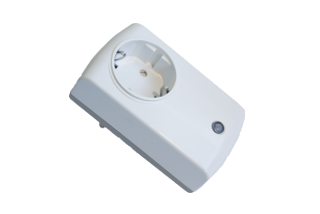
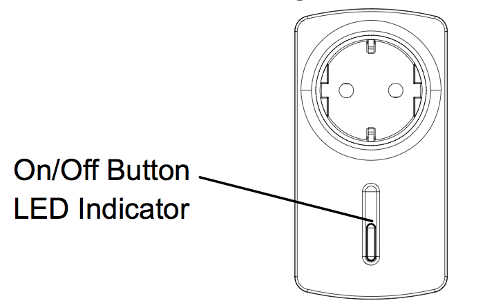

EVR_AN1582
Firmware Version : 1.1 |
 |
Quick StartPlug this module into a wall outlet near the load to be controlled. Plug the load into the module and switch the load to the ON position. To turn ON the module and the load plugged into it, press and release the ON/OFF button of the module. Inclusion and Exclusion are confirmed by a tripple click of the button of the device. Please refer to the chapters below for detailed information about all aspects of the products usage. |
Product description
The AN1582 is a pluggable switch that controls electrical loads connected to mains power using standard Schuko wall outlets. It can switch all electrical loads up to 3500 W and additionally measure the electrical power taken by this load (in Wh) and meters the electrical energy consumed (in kWh). The device is IP 20 rated and therefore, it only can be used in dry environments. The device is operated either wirelessly using Z-Wave or with a button on the device. A red LED indicates the switching status.
Installation Guidelines
The device can be plugged into every standard Schuko outlet (plug type E). Do not locate the Module facing direct sunlight, humid or dusty place. The suitable ambient temperature for the module is 0°C ~ 40°C.
Behavior within the Z-Wave network
I On factory default the device does not belong to any Z-Wave network. The device needs to join an existing wireless network to communicate with the devices of this network. This process is called Inclusion. Devices can also leave a network. This process is called Exclusion. Both processes are initiated by the primary controller of the Z-Wave network. This controller will be turned into exclusion respective inclusion mode. Please refer to your primary controllers manual on how to turn your controller into inclusion or exclusion mode. Only if the primary controller is in inclusion or exclusion mode, this device can join or leave the network. Leaving the network - i.e. being excluded - sets the device back to factory default.
If the device already belongs to a network, follow the exclusion process before including it in your network. Otherwise inclusion of this device will fail. If the controller being included was a primary controller, it has to be reset first.
Inclusion and Exclusion are confirmed by a tripple click of the button of the device.
Operating the device

The device is able to switch and measure any electric load up to 3500 W. Any load above 3500 W is considered as overloading. When overloading is detected the device will turn off the load, lock the local button and indicate the status by flashing the LED for 30 sec. Unplugging and replugging the module will reset the module to normal state. The electrical load can be switching using wireless commands and operating the local button. The LED inside the local button will indicate the switching status.
To access the metered and measure electric values a gateway with appropriate visualization is required.
Associations
A Z-Wave devices control other Z-Wave devices. The relationship between one device controlling another device is called association. In order to control a different device, the controlling device needs to maintain a list of devices that will receive controlling commands. These lists are called association groups and they are always related to certain events (e.g. button pressed, sensor triggers, ...). In case the event happens all devices stored in the respective association group will receive a common wireless command.
Association Groups:
| 1 | Send Alarm, Switch Report and Meter Report (max. nodes in group: 1) |
| 2 | Pressing button to switch other devices (max. nodes in group: 4) |
Configuration Parameters
Z-Wave products are supposed to work out of the box after inclusion, however certain configuration can adapt the function better to user needs or unlock further enhanced features.
IMPORTANT: Controllers may only allow to configure signed values. In order to set values in the range 128 … 255 the value sent in the application shall be the desired value minus 256. For example: to set a parameter to 200 it may be needed to set a value of 200 minus 256 = minus 56. In case of two byte value the same logic applies: Values greater than 32768 may needed to be given as negative values too.
| Value | Description |
|---|---|
| 0 | Disable |
| 1 — 120 | 10 * 100 ms = 1 sec (Default 10) |
| Value | Description |
|---|---|
| 0 | Disable (Default) |
| 1 | Enable |
| Value | Description |
|---|---|
| 0 | Disabled |
| 1 — 3240 | Interval = Wert * 10 sec (Default 3) |
Technical Data
| Power Supply | 230V ~50-60 Hz |
| Attachable Loads | 16A (3500 W), overcurrent is detected above 3000W |
| IP Rating | 20 |
| Explorer Frame Support | No |
| SDK | 5.02 pl2 |
| Device Type | Slave with routing capabilities |
| Generic Device Class | Binary Switch |
| Specific Device Class | Binary Power Switch |
| Routing | Yes |
| FLiRS | No |
| Firmware Version | 1.1 |